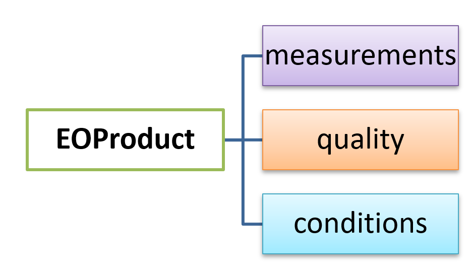

Introduction to the EOPF
Introduction
In this chapter, we will introduce the European Space Agency’s (ESA) Earth Observation Processor Framework (EOPF) initiative. This project marks a significant step towards modernising how we handle satellite data, specifically by moving away from the traditional .SAFE data format to a more efficient, cloud-optimised format. We will take a closer look at the new structure ESA has developed for this purpose.
What we will learn
- üì° What exactly is ESA‚Äôs EOPF initiative, and why is it important?
- üìÄ Which metadata is crucial for the EOPF data?
- ⚙️ Which new encoding format has ESA proposed?
What is EOPF?
The Earth Observation Processor Framework (EOPF) is an initiative led by the European Space Agency (ESA) designed to modernise and harmonise data from the Copernicus Sentinel Missions.
With the upcoming Copernicus Expansion missions in 2028, the amount of data produced daily will significantly increase. EOPF is ESA’s solution to organise Sentinel data in a way that works seamlessly with modern cloud technology. This will make it easier to find, access, and process the information you need. The new approach provides user-friendly access, simplifies maintenance, and helps keep costs down, guaranteeing reliable access to Sentinel data in the long run.
The Sentinel-1, Sentinel-2, and Sentinel-3 missions are the first to be updated with this new system.
The EOPF Data Model
The EOPF data model has been defined by following a set of principles:
- Open standards: Following common and community-approved data standards ensures sustainability and user uptake.
- Interoperability: Harmonised with a clear and organised structure that describes the data itself.
- Cloud optimisation: Designed for efficient access and handling in cloud environments.
- Conversion flexibility: Providing tools to adjust the data for different applications.
Under EOPF, there are four key areas of activities: (i) EOPF product structure, (ii) EOPF metadata structure, (iii) EOPF encoding structure and (iv) the EOPF Processor Framework:
EOPF product structure
As part of the EOPF, ESA is actively working on a common data structure for Sentinel data products to define a common meta-model that can be used across all Sentinel and other EO missions. This approach ensures that data from several missions is consistent.
The EOPF product structure consists of the following components:
- Measurements: The actual sensor readings (like how much light is reflected or the temperature), at different levels of detail.
- Quality indicators: Details that help understand how reliable the measurements are.
- Conditions: Information about the environment or technical aspects when the data was collected.
- Attributes: Global metadata, such as when it was acquired and the sensor’s orbit.

Learn more about the EOPF Zarr product structure here.
EOPF metadata structure
Metadata provides all relevant information required to uniquely describe each Sentinel product. The EOPF metadata structure is organised as follows:
- Discovery Metadata: Following the metadata structure defined by the SpatioTemporal Asset Catalogue (STAC), which helps to keep things consistent across different missions.
- Processing History Metadata: Keeping a record of how the data has been processed.
- Other Metadata: Information like the status of the sensor and details about the satellite’s orbit.
EOPF and STAC: Learn more about EOPF and STAC here.
EOPF encoding structure
An encoding structure can be seen as the specific method used to package and store data and its associated metadata in a digital format. Building on the consistent data structure and clear metadata, the new storage system must be capable of handling various aspects of current Sentinel data (such as manifest files and tile structures from the .SAFE format) while remaining fully compatible with cloud environments.
ESA chose .zarr as encoding format as it allows for instant access to data, efficient processing of massive amounts of data, and seamless integration with other datasets. The EOPF Sentinel Zarr data encoding allows you to work with data from multiple missions more effectively.
Learn more about the EOPF Sentinel Zarr format here. And learn more about cloud-optimised geospatial data formats in general in the Cloud-Optimised Geospatial Data Formats Guide
EOPF processor framework
The way Sentinel data is processed is being updated to take advantage of modern cloud computing. This will make the processing faster and more efficient, and at the same time ensure the scientific quality and accuracy of the Sentinel data remains the same.
To learn more about the EOPF processor framework, visit https://eopf.copernicus.eu/eopf/
Conclusion
Throughout this section, we explored the EOPF initiative and its adoption of the .zarrformat. This new approach is set to significantly improve and simplify how we access and work with data from the satellite missions Sentinel-1, Sentinel-2, and Sentinel-3.
What’s next?
In the following section, we learn why EO data needs to be cloud-optimised when processed in the cloud.